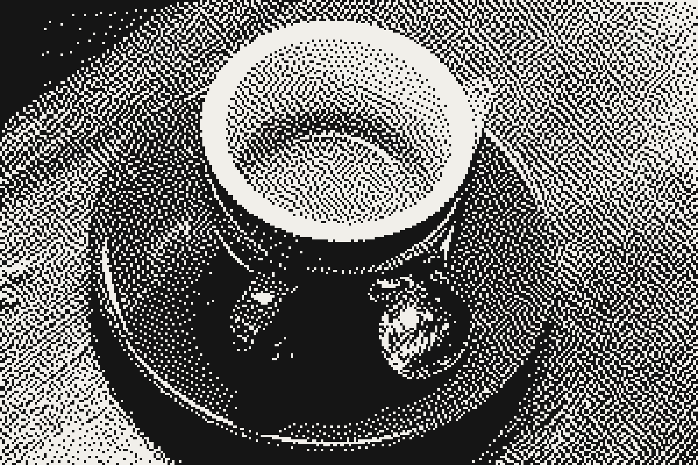
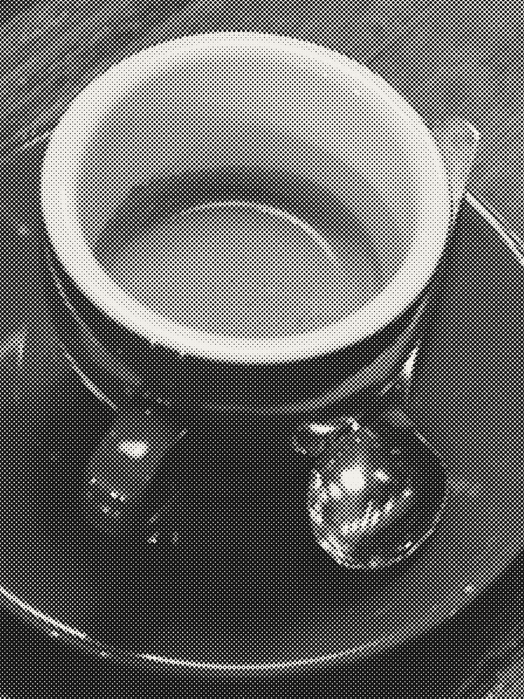
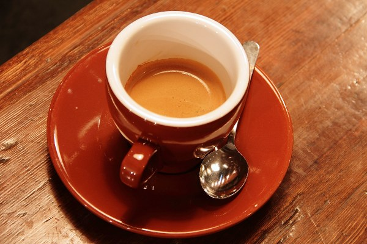

Identity brief
Bordeaux, 2026
A roastery that takes its time, and an identity that shows it.
(01) Approach
Light roasts, small batches, beans from four farms we visit every year.
The brand stays as quiet as the coffee: one typeface for shouting, one for talking.

(02) Image
Photos are never shown raw. Every image goes through the same halftone screen, in ink on paper.
It ties together pictures from different phones and seasons, and prints well on cheap paper bags.
(03) Rest
72h
Every batch rests 72 hours before it is sold. The packaging says so, in big numbers.
(04) Voice

“Good coffee is a slow thing, and so is trust.”
Tone of voice — short, warm, never in a hurry
(05) Color
Paper and ink do the work. Orange is kept for a single thing per page: a price, a date, a word.
Paper
#F1EFEA
Ink
#151515
Roast
#5B1609
Signal
#FF4F12